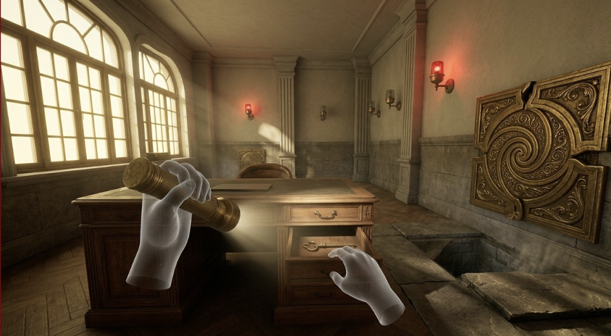

고풍스러운 시약소 사무실 내부에서 조사를 시작합니다. 숨겨진 공문서와 단서들을 종합하여 지하 수로로 진입할 수 있는 비밀 통로를 열어야 합니다.

시약소의 역사적 배경: 본 스테이지의 배경이 되는 타이중 시약소 사무실은 레트로 미래지향적인 스팀펑크 오브젝트들로 가득 차 있습니다. 단순히 방을 탈출하는 것을 넘어, 당시 수리조합 요원들이 남긴 일지와 설계 도면을 읽으며 단수 사태의 근본적인 원인에 한 걸음 다가서게 됩니다.
💡 최초 진입 가이드: 책상 위 손전등을 쥔 후 방 안의 어두운 구석구석을 먼저 비추어 보십시오. 조명이 닿지 않는 곳에 조합원의 표식이 숨겨져 있습니다.